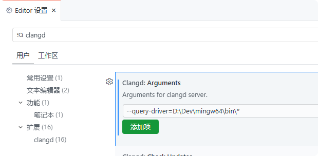
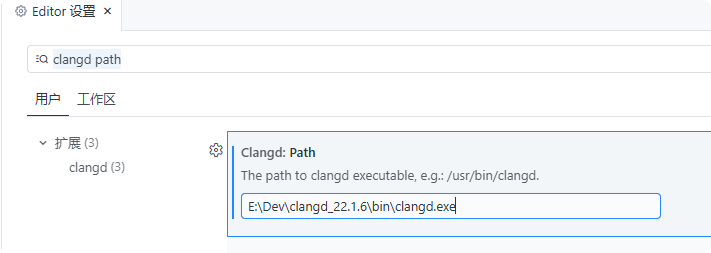
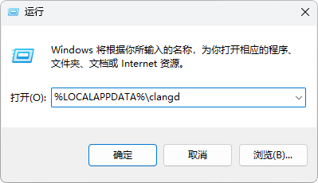
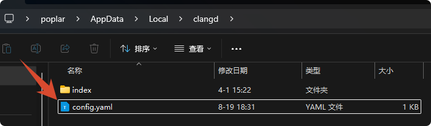
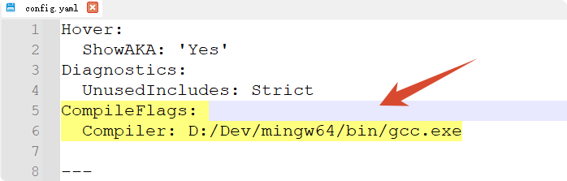
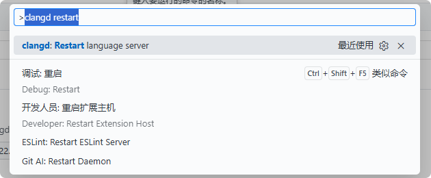

<!DOCTYPE lake>
<h2 data-lake-id="gJnnV" id="gJnnV"><span data-lake-id="u16833918" id="u16833918">配置mingw的gcc环境</span></h2><blockquote class="lake-alert lake-alert-success" data-lake-id="u4a53a8fa" id="u4a53a8fa"><p data-lake-id="ub8123c3e" id="ub8123c3e"><span data-lake-id="u38dafcad" id="u38dafcad">mingw配置参见: </span><a data-lake-id="uea60df7c" href="../1.%20C%E8%AF%AD%E8%A8%80%E5%89%8D%E8%A8%80/1.2%20%E7%BC%96%E7%A8%8B%E7%8E%AF%E5%A2%83.html#pyCYi" id="uea60df7c"><span data-lake-id="udb34c6f2" id="udb34c6f2">https://www.yuque.com/icheima/cprogram/pt7xkqohhoptsgez#pyCYi</span></a></p></blockquote><ol list="u9342f213"><li data-lake-id="u5ac06606" fid="u22c2bdfc" id="u5ac06606"><span data-lake-id="u6e07510e" id="u6e07510e">进入设置搜索clangd</span></li><li data-lake-id="u27130b75" fid="u22c2bdfc" id="u27130b75"><span data-lake-id="ub9306a44" id="ub9306a44">在Clangd: Arguments里添加项, 填写内容如下(注意末尾用*)</span></li></ol><span class="yuque-card-unsupported">[codeblock]</span><p data-lake-id="u3f680b04" id="u3f680b04"><span data-lake-id="u21dad818" id="u21dad818">这里的路径要根据你本地的gcc路径填写, gcc路径可在cmd里用如下命令获取</span></p><span class="yuque-card-unsupported">[codeblock]</span><p data-lake-id="u3bba17b8" id="u3bba17b8"><span data-lake-id="u54a362df" id="u54a362df">示例输出如下</span></p><p data-lake-id="uc2e14a45" id="uc2e14a45"></p><p data-lake-id="u8385b5a9" id="u8385b5a9"></p><p data-lake-id="u9ca68a44" id="u9ca68a44"><br/></p><p data-lake-id="u2066320e" id="u2066320e"><br/></p><h2 data-lake-id="A9Bi0" id="A9Bi0"><span data-lake-id="ud08e1fd4" id="ud08e1fd4">配置clangd环境</span></h2><ol list="ud30f0cdf"><li data-lake-id="ubfb6d053" fid="u151cdebb" id="ubfb6d053"><span data-lake-id="ufa5c768a" id="ufa5c768a">下载并解压</span><a class="yuque-card-link" href="../../_assets/e2ef24ce9fa6e76fee03059c.zip">clangd-windows-22.1.6.zip</a></li><li data-lake-id="udd3c32cc" fid="u151cdebb" id="udd3c32cc"><span data-lake-id="u0bc2e902" id="u0bc2e902">进入设置，搜索 </span><code data-lake-id="u52d4fffe" id="u52d4fffe"><span data-lake-id="u3d490636" id="u3d490636">clangd path</span></code></li><li data-lake-id="uf43df8e5" fid="u151cdebb" id="uf43df8e5"><span data-lake-id="ueda5fe83" id="ueda5fe83">填写</span><code data-lake-id="uc1bd9c5b" id="uc1bd9c5b"><span data-lake-id="ua16d4f00" id="ua16d4f00">clangd.exe</span></code><span data-lake-id="ufca406de" id="ufca406de">程序路径(自行解压的压缩包路径)</span></li></ol><p data-lake-id="uc9b0e019" id="uc9b0e019"></p><p data-lake-id="u66ad7f71" id="u66ad7f71"><br/></p><h2 data-lake-id="MRTFT" id="MRTFT"><span data-lake-id="u0be93d07" id="u0be93d07">修改clangd的config文件</span></h2><p data-lake-id="u03499a81" id="u03499a81"><span data-lake-id="ud403827b" id="ud403827b">打开config.yaml文件, 路径 </span><code data-lake-id="u7a06b867" id="u7a06b867"><span data-lake-id="u0c5831d1" id="u0c5831d1">%LOCALAPPDATA%\clangd</span></code><span data-lake-id="ud782d585" id="ud782d585">,可以直接 </span><code data-lake-id="uf5213f0c" id="uf5213f0c"><span data-lake-id="u02b7d127" id="u02b7d127">Win + R</span></code><span data-lake-id="u5afdf60a" id="u5afdf60a"> 运行打开</span></p><p data-lake-id="ua1e8ab1b" id="ua1e8ab1b"></p><p data-lake-id="u460081e4" id="u460081e4"></p><p data-lake-id="u88ffd8bc" id="u88ffd8bc"><span data-lake-id="ua971c5e7" id="ua971c5e7">添加如下两行代码, 保存即可, 这里的gcc.exe路径要替换成你本地gcc.exe的路径</span></p><span class="yuque-card-unsupported">[codeblock]</span><p data-lake-id="uda76bf1c" id="uda76bf1c"></p><p data-lake-id="u6bf68ef5" id="u6bf68ef5"><br/></p><h2 data-lake-id="KBCFV" id="KBCFV"><span data-lake-id="u49a94812" id="u49a94812">重启clangd服务, 重新加载窗口</span></h2><p data-lake-id="u4f598b1d" id="u4f598b1d"><span data-lake-id="u620c313e" id="u620c313e">在Trae里按 </span><code data-lake-id="uafeee6d9" id="uafeee6d9"><span data-lake-id="u81097b3f" id="u81097b3f">F1</span></code><span data-lake-id="u91c041e5" id="u91c041e5"> 或 </span><code data-lake-id="ufd5a5a41" id="ufd5a5a41"><span data-lake-id="u584e47b7" id="u584e47b7">Ctrl + Shift + P</span></code><span data-lake-id="ub9313d65" id="ub9313d65"> 输入并执行如下两个指令</span></p><ol list="u7b7ef300"><li data-lake-id="u38469678" fid="u6146d75c" id="u38469678"><span data-lake-id="u9a302f0f" id="u9a302f0f">重启clangd服务: </span><code data-lake-id="uc69ae16b" id="uc69ae16b"><span data-lake-id="u0d86d3c6" id="u0d86d3c6">clangd restart</span></code></li></ol><p data-lake-id="u59aebdf1" id="u59aebdf1"></p><ol list="u6c68ed1e" start="2"><li data-lake-id="u88c861b4" fid="u56eb41ef" id="u88c861b4"><span data-lake-id="u288d229d" id="u288d229d">重启窗口 </span><code data-lake-id="u2d746dd6" id="u2d746dd6"><span data-lake-id="u82f4fe48" id="u82f4fe48">dev reload</span></code></li></ol><p data-lake-id="u1fcdb731" id="u1fcdb731"></p>